Advanced Data Exploration
Video Game Data
For this project I start with a vgsales.csv file I downloaded from Kaggle. I also have some additional tables containing other video game related data I will later join with the vgsales table for some additonal insights. For this project, I have the following objectives...
- Create a Staging Copy
- Data Cleaning
- Input missing data
- Explore the data
- Join with addtional tables
- Additional data exploration
- Create multiple visualizations
1. Create a Staging Copy
Before starting making any changes to this data set it is important to make a staging copy so the original raw data is avaliable.
# Remove this table if it already exists
drop table if exists videogames.vgsales_staging
;
# Create a staging table identical to top_rated_movies
create table videogames.vgsales_staging
like videogames.vgsales
;
# Populate the new staging table with all data from the original top_rated_movies
insert videogames.vgsales_staging
select *
from videogames.vgsales
;
2. Data Cleaning
Before that data can be used propperly, it is important to clean the data by addressing issues such as duplicates, missing data, incorrect information, and inconsistant formatting.
Duplicates
The first item I want do address is to remove any duplicate data.
with duplicate_cte as
(
select *,
row_number()Over(partition by `name`, platform)as row_num
from videogames.vgsales_staging
)
select * from duplicate_cte
where row_num > 1
;
Here are the duplicates of a Madden NFL game for the PS3 and Need for Speed Most Wanted on PC and Xbox 360. These will need to be removed using the same process I outlined in my Data Cleaning Project.
# Remove this table if it already exists
drop table if exists videogames.vgsales_staging2
;
# Create a staging table identical to top_rated_movies_staging
create table videogames.vgsales_staging2
like videogames.vgsales_staging
;
# Add new row_num column for filtering duplicates
alter table videogames.vgsales_staging2
add column row_num int
;
# Populate the new staging2 table with all data from the first staging top_rated_movies table, including row_num.
insert into videogames.vgsales_staging2
SELECT *,
row_number()Over(partition by `name`, platform)as row_num
from videogames.vgsales_staging
;
# Duplicate values (indicated by row_num) are deleted.
delete
from videogames.vgsales_staging2
where row_num > 1
;
# Remove the row_num colum from the table since it is no longer needed.
alter table videogames.vgsales_staging2
drop column row_num
;
# Verify duplicates have been removed
with duplicate_cte as
(
select *,
row_number()Over(partition by `name`, platform)as row_num
from videogames.vgsales_staging2
)
select * from duplicate_cte
where row_num > 1
;
Extra Spaces
Often when data is input using a spreadsheet editor, an extra space will automatically get added to the end of an entry. This can cause data to show up as unique, when it should in fact be identical.
# Trim leading and trailing spaces from the title.
update videogames.vgsales_staging2
set `name` = trim(`name`), platform = trim(platform), genre = trim(genre), publisher = trim(publisher)
;
Inconsistant Naming
Next is to check if all of the publisher data is input correctly and they are using the same name for each unique pulbisher. Going through the output shows this multiple publishers are listed using different names, but should be identical.
# Display every unique publsher
select distinct publisher
from videogames.vgsales
order by publisher
;
 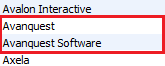
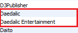
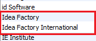
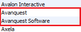
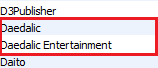
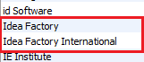
In these above examples where the data is referring to the same publisher, but is listed differently I will run a quick check to see what the most popular entery is. In the case of "Ascaron Entertainment" vs "Ascaron Entertainment GmbH", the first is included once, while the 2nd has 3 enteries. In this case I will update the 1 to match the other 3. I will often run an internet search to see what is listed on the company website or some other trusted source to ensure I am using the most accurate title.
# look at all of the different enteries for Ascaron to see which is more common.
select *
from videogames.vgsales_staging2
where publisher like 'Ascaron%'
;
# update any publisher starting with "Ascaron" and change it to "Ascaron Entertainment".
update videogames.vgsales_staging2
set publisher = 'Ascaron Entertainment'
where publisher like 'Ascaron%'
;
# look at all of the different enteries for Daedalic to see which is more common.
select *
from videogames.vgsales_staging2
where publisher like 'Daedalic%'
;
# update publisher information to "Daedalic Entertainment"
update videogames.vgsales_staging2
set publisher = 'Daedalic Entertainment'
where publisher like 'Daedalic%'
;
3. Input Missing Data
It seems there about 100 games with the publisher listed as "unknown", so this may take some time. The first game on this list is "Gran Turismo Concept 2001 Tokyo" and checking online the publisher is the same as the rest of the Gran Turismo series, "Sony Computer Entertainment". I would run similar code to update the remaining values.
select *
from videogames.vgsales
where publisher = 'Unknown'
order by platform
;
update videogames.vgsales
set publisher = 'Sony Computer Entertainment'
where name = 'Gran Turismo Concept 2001 Tokyo'
;
update videogames.vgsales_staging2
set publisher = 'Nintendo'
where name = 'Ultimate NES Remix'
;
update videogames.vgsales_staging2
set publisher = 'Kadokawa Shoten'
where name = 'AKB48+Me'
;
In several cases a game will be developed for release on mulitple systems by the same publisher. In the case of "Time Travelers", the PSP and PS Vita version already have the publisher set correctly, while the 3DS version is currently "unknown". While a quick internet search reveals the publisher to be "Level-5", however I can see the other 2 enteries use "Level 5". Therefore for the 3DS version, I will update the the 3DS version to match the existing publisher name.
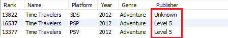
select *
from videogames.vgsales_staging2
where name like 'Time Travelers'
;
update videogames.vgsales_staging2
set publisher = 'Level 5'
where name = 'Time Travelers'
;
Some games will be published by different publishers in different regions. In the case of "Horse Life 4: My Horse, My Friend, My Champion", the North American publisher is "Independent Arts Software" and the European publisher is "Koch Media". Based on the sales data this game is the EU version. Furthermore, pulling up ever game with a title like "Horse Life" reveals the North American version is not included in this dataset. This could be something I can add if necessary, but for now I will just update the publisher for the EU version of Horse Life 4 on the 3DS.

select *
from videogames.vgsales_staging2
where name like '%Horse Life%'
;
update videogames.vgsales_staging2
set publisher = 'Koch Media'
where name = 'Horse Life 4: My Horse, My Friend, My Champion'
;
4. Explore the data
Now that the data has been cleaned and missing data has been filled in, it is time to start exploring the data to see what sorts of insights we can find. I will look at the top 10 selling games for Nintendo, Sega, PlayStation, and Xbox platforms.
select `rank`, `name`, platform, `year`, genre, global_sales
from videogames.vgsales_staging2
where
platform = 'Wii' or platform = '3DS' or platform = 'DS' or platform = 'GB' or
platform = 'GBA' or platform = 'GC' or platform = 'N64' or platform = 'NES' or
platform = 'SNES' or platform = 'WiiU'
order by global_sales desc
;
select `rank`, `name`, platform, `year`, genre, global_sales
from videogames.vgsales_staging2
where
platform = 'DC' or platform = 'GEN' or platform = 'SCD' or platform = 'SAT' or
platform = 'GG' or platform = 'GC'
order by global_sales desc
;
select `rank`, `name`, platform, `year`, genre, global_sales
from videogames.vgsales_staging2
where
platform = 'PS' or platform = 'PS2' or platform = 'PS3' or platform = 'PS4' or
platform = 'PSP' or platform = 'PSV'
order by global_sales desc
;
select `rank`, `name`, platform, `year`, genre, global_sales
from videogames.vgsales_staging2
where
platform = 'X360' or platform = 'XB' or platform = 'XOne'
order by global_sales desc
;
Nintendo and Sega
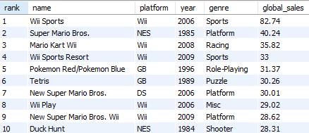
Sony and Microsoft
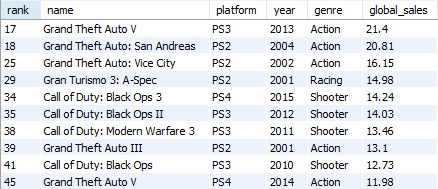 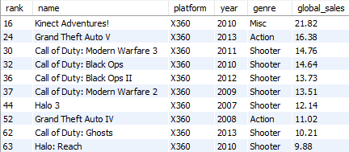I can see that Wii Sports is one of the best selling games for Nintendo, Kinect Adventures is at the top for Xbox 360, and Sonic the Hedgehog is a best seller for the Sega Genesis. Grand Theft Auto V appears to be a best seller for the PlayStation 3, although unlike the other 3 games it was not included with hardware. It would be nice if this data set indicated if a game was packed in with hardware or not because that would add additional insights to this data. Although, if it seems relevant enough that could be added later as a new column.
5. Join with addtional tables
When joining tables it is important to have some data that can be used to link the tables together. Often this could be something specific like an employee id or something more general like a video game title. In this case I will be joining the vgsales_staging2 table with a custom table I created using the game title and game platform.
# Select the all racing games from both tables where the game title and platform match.
select `rank`, `name`, vgsales_staging2.platform, Platform_Abv, `year`, vgsales_staging2.genre, publisher,
global_sales, coop, localmp, lanmp, onlinemp, peripheral
from videogames.vgsales_staging2
join videogames.games
on vgsales_staging2.name = games.game_title and vgsales_staging2.platform = games.platform_abv
order by vgsales_staging2.name
;
After running the above query, I noticed a few issues that should be corrected. Firstly, the platform for the game "Mario Kart 8" is indicated to be on the WiiU, when in fact it was only released on the Switch. Secondly, the vgsales table indicates PlayStation 1 platform as "PS", while my Games table uses "PS1" for the same platform. I will set Mario Kart to the Switch and update the vgsales platform from "PS" to "PS1".
update videogames.vgsales_staging2
set platform = 'Switch'
where name = 'Mario Kart 8'
;
update videogames.vgsales_staging2
set platform = 'PS1'
where platform = 'PS'
;
Looking over the data, my table has about 1104 games listed, while the vgsales table has 16324 games. This means that there are only 171 exact matches between the 2 tables which will limit the results. There appear to be several reasons for this.
- Firstly, there are 9 platforms on vgsales that are not on my games table, while there are 11 plaforms on my table that are not included in vgsales.
- Secondly, some of the game titles do not match: e.g. "Ghostbusters: The Video Game" vs "Ghostbusters" vs "Ghostbusters (2016)" vs etc...
- Additionally, vgsales includes multiple versions of the same game, but on different platforms, while my table has mosty games listed for a single platform.
select distinct vgsales_staging2.platform, games.Platform_Abv
from videogames.vgsales_staging2
left join videogames.games
on vgsales_staging2.platform = platform_abv
order by Platform_abv
;
select distinct vgsales_staging2.platform, games.Platform_Abv
from videogames.vgsales_staging2
right join videogames.games
on vgsales_staging2.platform = platform_abv
order by Platform
;
select `rank`, `name`, vgsales_staging2.platform, Platform_Abv, `year`, vgsales_staging2.genre, publisher,
global_sales, coop, localmp, lanmp, onlinemp, peripheral
from videogames.vgsales_staging2
left join videogames.games
on vgsales_staging2.name like games.game_title and vgsales_staging2.platform = games.platform_abv
where `name` like 'Ghost%'
order by vgsales_staging2.name
;
select `rank`, game_title, games.platform, platform_abv
from videogames.games
join videogames.vgsales
on vgsales.name = games.game_title
where game_title like '%Ghostbusters%'
;

 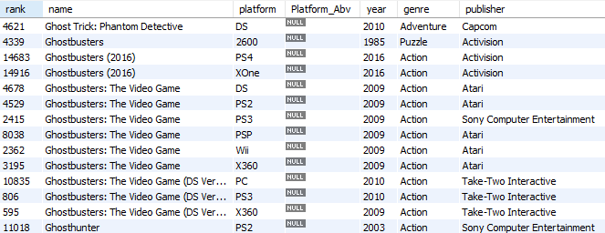
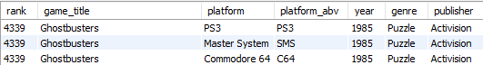
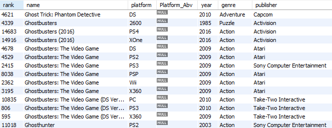
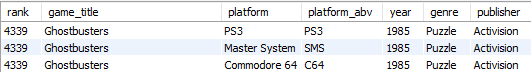
6. Additional data exploration
Now that multiple data tables are connected together, I can further explore the data and find other details.
#MOST POPULAR GENRES
select genre, count(genre)
from videogames.vgsales
group by genre
order by count(genre) desc
;
#SELECT GAMES WITH A COOP MODE ORDERED BY GLOBAL SALES
select `rank`, `name`, vgsales_staging2.platform, `year`, vgsales_staging2.genre, publisher, global_sales,
coop, localmp, lanmp, onlinemp
from videogames.vgsales_staging2
join videogames.games
on vgsales_staging2.name = games.game_title and vgsales_staging2.platform = games.platform_abv
where coop != 'no' and coop != ''
order by global_sales desc
;